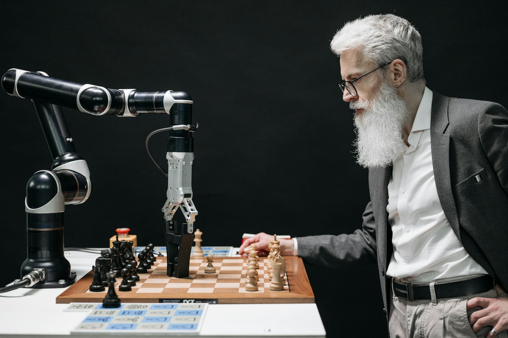
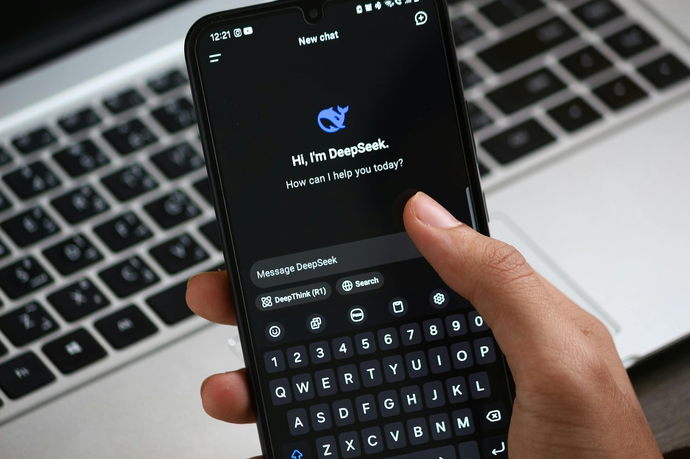
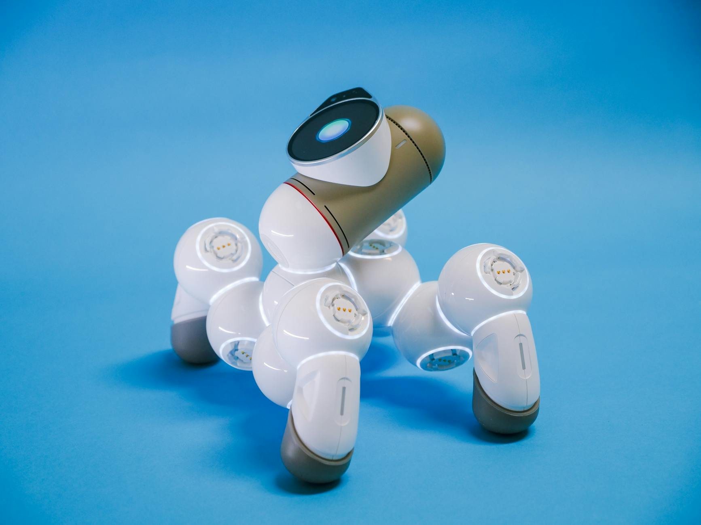
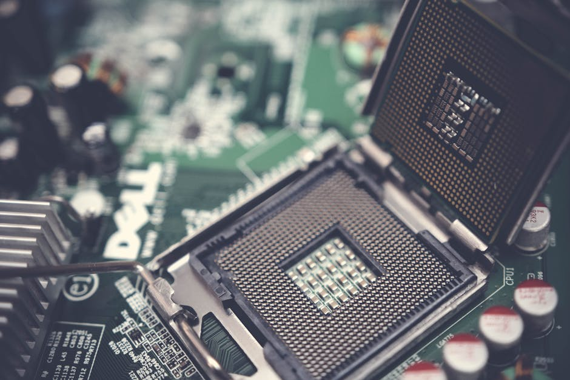
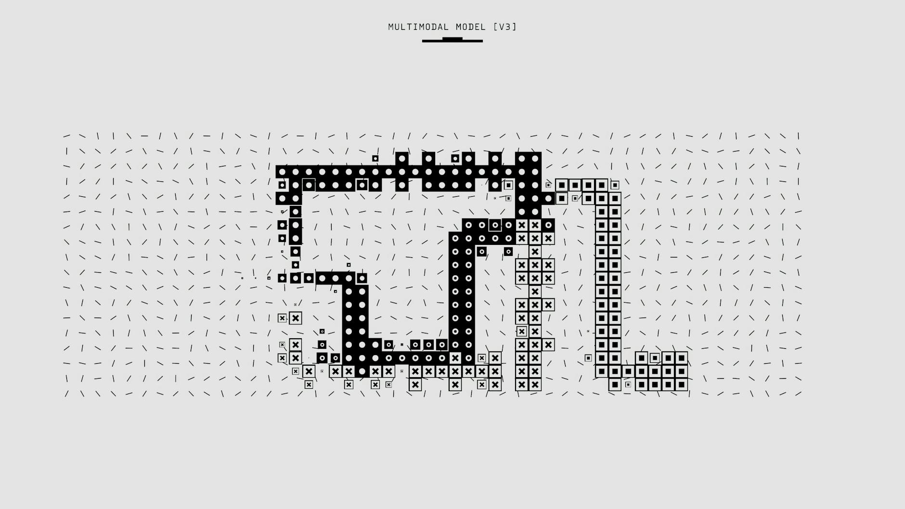
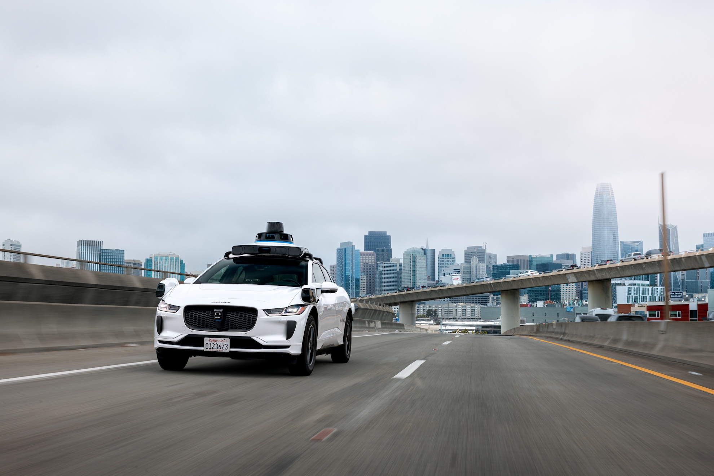

AI DAILY
AI 行业日报
2026年02月22日 · 精选 10 条
01融资投资
谷歌再砸 1750 亿美元，AI 基建进入百年债券时代
谷歌母公司 Alphabet 宣布 2026 年资本支出将达 1750—1850 亿美元，区间中值约 1800 亿美元（约合人民币 1.24 万亿元）——是 2025 年的近两倍，远超华尔街此前约 1200 亿美元的预期。资金主要用于 AI 基础设施和数据中心扩建。
为筹措资金，Alphabet 计划发债 200 亿美元，已吸引超 1000 亿美元认购订单，甚至考虑发行罕见的 100 年期债券——这是互联网泡沫以来科技公司首次尝试如此长期限债券。谷歌云四季度积压订单已达 2400 亿美元，同比翻倍。
INSIGHT
1800 亿美元砸向 AI 基础设施，这不是投机，是被需求逼出来的。2400 亿美元的云积压订单意味着客户已经排队，谷歌现在的问题不是"要不要投"，而是"建得够不够快"。百年债券的出现说明一件事：AI 基建的回报周期，已经被计算到了跨代际的尺度。
02行业动态
47 天 30 次更新：中美 AI 进入全赛道双极竞速

量子位统计，2026 年 1 月 1 日至除夕，仅 47 天内，中国国内具有行业影响力的 AI 模型技术迭代已超过 30 起，平均每 1.5 天就有一款新模型发布。同期硅谷从 Meta Llama4-Swarm 到 Google Gemini 3.1 Pro，也保持着平均每 2—3 天一次重磅发布的节奏。
2 月 12 日单日，中美四大厂商 24 小时内同步发布：字节 Seedance 2.0（视频生成）、小米具身模型、Google Gemini 3 Deep Think、OpenAI GPT-5.3-Codex-Spark，覆盖视频生成、深度推理、具身智能三条赛道。4 分钟短片制作周期从 6 周压缩至 2 周。
INSIGHT
47 天 30 次发布的背后是一个结构性变化——大模型竞争已经不再是单点突破，而是赛道级全面铺开。推理、视频、具身、对话，每个方向同时开打。这种密度意味着任何一家公司都无法靠单款产品守住优势，胜负将在产品线整体推进速度上见分晓。
03行业动态
中国 AI 破亿潮来了，最难的题留给了社交

春节期间，阿里、腾讯、字节同步将 AI 深度嵌入各自核心产品：阿里嵌入购物，字节嵌入内容，腾讯嵌入社交。中国头部 AI 应用集体迈入"亿级俱乐部"，DeepSeek 也在春节期间完成一轮爆发式增长。硅谷同期，OpenAI 上线群聊，Character.AI 累计注册用户超 4000 万。
腾讯元宝推出"派"功能，让 AI 作为群聊成员存在——冷场时抛话题、帮长辈辟谣、游戏群里提醒上号。路线与硅谷截然不同：硅谷 AI 陪伴应用 2025 年全球下载量超 2.2 亿次，但研究显示 AI 陪伴缓解孤独感的同时，会削弱用户建立真实关系的意愿。
INSIGHT
社交是 AI To C 化最难的题，难点不是技术，而是关系链归属。硅谷在做"AI 的社交"——让 AI 当主角；中国在做"人的 AI 社交"——让 AI 退到工具位。腾讯有 10 亿级微信用户的关系网，这是谷歌砸再多钱也买不到的入场券。
04市场数据
港股大模型概念股走弱，智谱单日跌超 20%
2 月 23 日，港股大模型概念股集体走弱，智谱单日跌幅超 20%，MiniMax 跌 13%。这是近期 AI 概念股在港股市场出现的较大规模回调。
此次回调发生在春节 AI 大战刚结束、多款国内大模型密集发布后。港股 AI 板块此前随国内 AI 热潮大幅上涨，智谱、MiniMax 等公司均在 2025 年完成上市或大额融资，投后估值处于历史高位。
INSIGHT
单日跌 20% 更像是"预期透支后的喘气"。智谱、MiniMax 的估值在春节 AI 热潮中被推到高位，但商业化落地还没跑出足够强的数据支撑。市场在问一个问题：发布了这么多模型，钱从哪里来？这个问题，国内外大模型公司都还没给出令人满意的答案。
05观点评论
AI 内容洪流来袭，创作者经济如何存活？
超级 YouTuber MrBeast 宣布收购金融科技初创 Step，同期好莱坞多家电影公司向字节跳动发出律师函，抗议其视频生成模型 Seedance 2.0 涉嫌侵权。两则新闻指向同一个问题：AI 内容洪流正在重构创作者的生存逻辑。
MrBeast 的食品产品线 2024 年盈利数亿美元，而他的媒体业务本身却在亏损。TechCrunch 分析指出，头部创作者正集体从广告收入模式转向电商、品牌授权等多元变现——原因是广告变现已到天花板，AI 生成内容的涌入正进一步压低内容本身的价值。
INSIGHT
MrBeast 的内容公司在亏损，但他的巧克力赚钱了——这不是个例，而是创作者经济的结构性信号。AI 让内容生产成本趋近于零，内容本身的稀缺性消失了。下一代创作者的护城河，可能不在于"创作能力"，而在于"能不能把注意力变成品牌资产"。
06融资投资
智平方完成超 10 亿 B 轮融资，估值破百亿，一年融资 12 轮

通用智能机器人公司智平方完成 B 轮系列融资，规模超 10 亿元人民币，公司估值正式突破百亿。投资方包括百度战投、中车资本、特斯拉生态链上市龙头企业、国泰海通及地方基金。
这是智平方在 2025 年半年内连续完成 7 轮数亿级融资后，再度完成的 5 轮融资——一年累计完成 12 轮融资，成为全球融资节奏最快的具身智能企业。百度战投入股，被视为大模型能力与具身硬件结合的信号。
INSIGHT
一年 12 轮融资，平均每个月融一轮——这个节奏本身就是信号：具身智能赛道的窗口期共识已经形成，机构在抢时间卡位。百度战投的加入说明大模型公司开始往下游布局，具身机器人的"大脑"问题将率先被解决，剩下的是机械结构和量产能力的比拼。
07技术突破
Taalas 拿下 1.69 亿美元：专用芯片能打败英伟达吗？

多伦多 AI 芯片初创 Taalas 完成 1.69 亿美元新一轮融资，累计融资约 2.19 亿美元。其首款演示芯片 HC1 采用台积电 6nm 工艺，专为 Llama 3.1 8B 深度优化，官方数据显示每秒可生成 17,000 个 token，速度宣称比英伟达 H200 快 73 倍，功耗仅为其 1/10。
Taalas 走的是 MSIC（模型专用集成电路）路线——把模型权重直接"固化"到晶体管硬件中，绕开了 HBM 高带宽内存瓶颈。代价是灵活性归零：芯片一旦流片，就锁定在特定模型上，行业架构迁移时现有硬件可能快速贬值。
INSIGHT
73 倍速度、1/10 功耗，数字够震撼，但藏着一个巨大的赌注：Taalas 把所有筹码压在了 Llama 架构的长期主导上。推理市场正在走向成本优先，但押注"专用"还是"通用"，这道题目前没有标准答案。
08技术突破
中国脑机接口加速商业化：政策定价、116 亿扶持、2030 年全链目标
中国脑机接口（BCI）产业正从研究阶段快速向商业化推进。四川、湖北、浙江等省份已率先为 BCI 设立医疗服务定价，加速其纳入国家医保体系。2025 年 8 月，工信部联合六部委发布国家级 BCI 发展路线图，目标 2027 年关键技术突破，2030 年建成完整产业供应链。
2025 年 12 月深圳 BCI 峰会宣布 116 亿元人民币（约 1.65 亿美元）专项扶持政策。创业公司 NeuroXess 专攻可植入 BCI，Gestala 主攻非侵入式超声 BCI，创始人彭凤雏认为，未来 3—5 年 BCI 将以医疗为主战场，长期则指向"人机增强"。
INSIGHT
脑机接口正在走一条跟 AI 芯片类似的路：政策先行，定价入医保，建产业链。中国的优势不在于单点技术，而在于能把一个新技术品类快速纳入监管体系，形成规模化落地条件。Neuralink 还在讲"先驱"故事的时候，中国已经在讨论医保报销了。
09技术突破
西湖大学 AutoFigure：万字材料秒出可编辑矢量插图，入选 ICLR 2026

西湖大学张岳实验室推出学术插图生成框架 AutoFigure，已入选 ICLR 2026。它能将万字论文、教科书等文字材料直接生成高质量学术插图，升级版 AutoFigure-Edit 输出可编辑的 SVG 矢量文件，可在 PPT 中直接拖拽修改。代码、数据集、网站全部开源。
团队构建了全球首个大规模科学插图基准 FigureBench，含 3,300 个高质量文本-图片对。人类专家盲测显示，66.7% 的论文一作认为 AutoFigure 生成的插图达到出版级（Camera-ready）标准；在教科书类任务中胜率高达 97.5%。
INSIGHT
AutoFigure 解决的不只是效率问题，而是"AI 生成 + 人工编辑"之间那道断层——输出 SVG 而非 PNG，意味着研究者终于能接着改，而不是从头重来。开源 + ICLR 入选，这个工具会很快进入每个学术群的工具箱。
10行业动态
Waymo 远程操控曝菲律宾外包，无人驾驶"全自动"边界被质疑

Waymo 首席安全官在美国参议院商务委员会作证时透露，公司在菲律宾设有远程引导（Remote Assistance）工作人员，协助处理无人车遇到的特殊情况。参议员 Ed Markey 随即质疑：没有美国驾照的海外工作人员，是否应该参与美国道路上的无人车操作？
Waymo 随后发文澄清：远程人员并非"远程驾驶"，只是响应自动驾驶系统的信息请求；涉及事故、执法对接的复杂任务，由全部驻美国本土的事件响应团队（ERT）处理。目前 Waymo 全球同时约有 70 名远程助理在岗，运营 3,000 辆无人车，每周行驶超过 400 万英里。
INSIGHT
Waymo 真正的麻烦不是菲律宾的工作人员，而是这件事暴露了一个监管灰区：自动驾驶的"全自动"到底到哪里为止？70 人远程支撑 3,000 辆车，说明系统仍然依赖人类兜底。这个数字一旦被监管机构盯上，Waymo 的运营成本和扩张速度都可能面临重新审视。
由 Zayen知蓝 整理 · 构建者视角